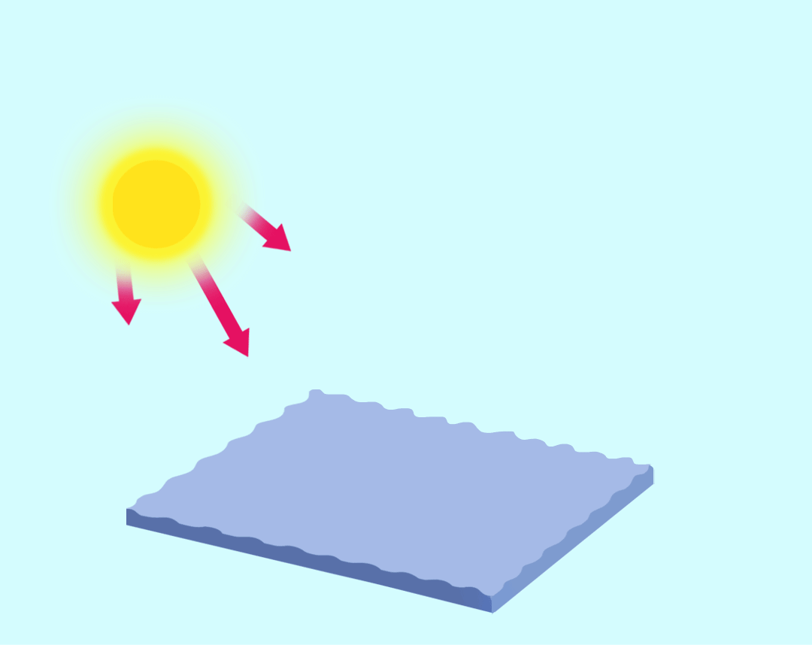

台风形成——图三
台风形成——图三
小朋友们，我们经常在看天气预报时，会看到类似图上的画面，你知道这幅云图表示的是什么吗？
没错，它跟其它看到的云图不一样，它代表的是“台风”。在北半球台风的旋转方向呈逆时针旋转。但是，在南半球则为顺时针旋转。
上面的这幅图你能猜出这是在南半球还是北半球的台风吗？
 台风形成——图一
台风形成——图二
台风形成——图三
台风形成于热带或副热带26℃以上广阔海面上的热带气旋。那里温度高，大量的海水被蒸发到了空中，形成一个低气压中心。随着气压的变化和地球自身的运动，流入的空气也旋转起来，形成一个逆时针旋转的空气漩涡，这就是热带气旋。只要气温不下降，这个热带气旋就会越来越强大，当近地面最大风速到达或超过每秒17．2米时，便形成了台风。
台风过境常伴随着大风和暴雨或特大暴雨等强对流天气，对人们的生活带来灾难性的影响。但与此同时，台风也能带来充沛的雨水资源。
应对台风应做好哪些防范措施
1. 气象台根据台风可能产生的影响，在预报时采用 “消息”、“警报”和“紧急警报”三种形式向社会发布;同时，按台风可能造成的影响程度，从轻到重向社会发布蓝、黄、橙、红四色台风预警信号。我们可以密切关注媒体有关台风的报道，及时采取预防措施。
2. 强风有可能吹倒建筑物、高空设施，造成人员伤亡。居住在各类危旧住房、厂房、工棚的群众，在台风来临前，要及时转移到安全地带，不要在临时建筑(如围墙、广告牌、铁塔等附近避风避雨。
3. 强风会吹落高空物品，要及时搬移屋顶、窗口、阳台处的花盆、悬吊物等;在台风来临前，最好不要出门，以防被砸、被压、触电等不测;检查门窗、室外空调、保笼、太阳能热水器的安全，并及时进行加固。
4. 在做好以上防风工作的同时，要做好防暴雨工作。
5. 台风来临前，应准备好手电筒、收音机、食物、饮用水及常用药品等，以备急需。
6. 关好门窗，检查门窗是否坚固;取下悬挂的东西;检查电路、炉火、煤气等设施是否安全。
7. 不要去台风经过的地区旅游，更不要在台风影响期间到海滩游泳或驾船出海。
8. 遇到危险时，请拨打110等电话求救。